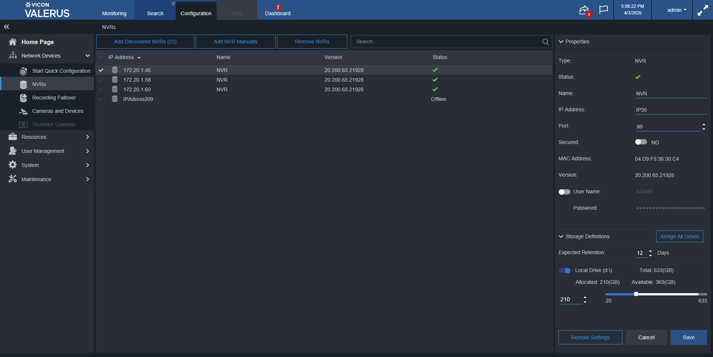
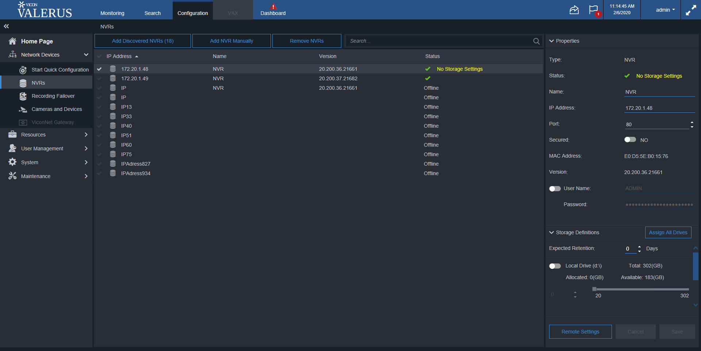
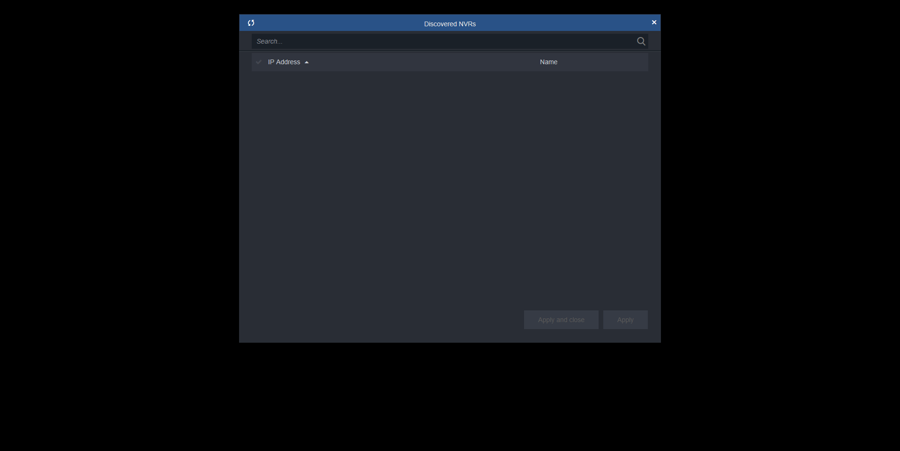

Total Tests
Total Steps
Total Time Taken (Current Run)
8h 37m 31s+416ms
Total Time Taken (Overall)
8h 37m 31s+416ms
Start
2020-02-05 19:27:52
End
2020-02-06 04:05:23
Pass Percentage
Environment
| Param | Value |
|---|---|
| User Name | popatb |
| OS | Windows 10 |
| Java Version | 1.8.0_202 |
| Host Name | BORSE-PC |
Tests
-
ChangeIPAdressExitCancelUnsavedChangesTest fail2020-02-05 21:14:26 2020-02-05 21:17:56 0h 3m 29s+967ms
Status Timestamp Details 21:14:26 If status for NVR 172.20.1.46 isn't 'Online' than delete it 21:14:53 If NVR 172.20.1.46 isn't exist - add it 21:17:36 Changing NVR IP Adress from 172.20.1.46 to IP30 and press 'Cancel' 21:17:38 Check that Cancel button is enable after name changes 21:17:38 Check that Save button is enable after name changes 21:17:56 Check that change isn't saved 21:17:56 java.lang.AssertionError: expected [172.20.1.46IP30] but found [IP30] at org.testng.Assert.fail(Assert.java:97) at org.testng.Assert.assertEqualsImpl(Assert.java:136) at org.testng.Assert.assertEquals(Assert.java:118) at org.testng.Assert.assertEquals(Assert.java:575) at org.testng.Assert.assertEquals(Assert.java:585) at testcases.NVRsElementsTest.ChangeIPAdressExitCancelUnsavedChangesTest(NVRsElementsTest.java:377) at sun.reflect.NativeMethodAccessorImpl.invoke0(Native Method) at sun.reflect.NativeMethodAccessorImpl.invoke(NativeMethodAccessorImpl.java:62) at sun.reflect.DelegatingMethodAccessorImpl.invoke(DelegatingMethodAccessorImpl.java:43) at java.lang.reflect.Method.invoke(Method.java:498) at org.testng.internal.MethodInvocationHelper.invokeMethod(MethodInvocationHelper.java:133) at org.testng.internal.TestInvoker.invokeMethod(TestInvoker.java:584) at org.testng.internal.TestInvoker.invokeTestMethod(TestInvoker.java:172) at org.testng.internal.MethodRunner.runInSequence(MethodRunner.java:46) at org.testng.internal.TestInvoker$MethodInvocationAgent.invoke(TestInvoker.java:804) at org.testng.internal.TestInvoker.invokeTestMethods(TestInvoker.java:145) at org.testng.internal.TestMethodWorker.invokeTestMethods(TestMethodWorker.java:146) at org.testng.internal.TestMethodWorker.run(TestMethodWorker.java:128) at java.util.ArrayList.forEach(ArrayList.java:1257) at org.testng.TestRunner.privateRun(TestRunner.java:770) at org.testng.TestRunner.run(TestRunner.java:591) at org.testng.SuiteRunner.runTest(SuiteRunner.java:402) at org.testng.SuiteRunner.runSequentially(SuiteRunner.java:396) at org.testng.SuiteRunner.privateRun(SuiteRunner.java:355) at org.testng.SuiteRunner.run(SuiteRunner.java:304) at org.testng.SuiteRunnerWorker.runSuite(SuiteRunnerWorker.java:53) at org.testng.SuiteRunnerWorker.run(SuiteRunnerWorker.java:96) at org.testng.TestNG.runSuitesSequentially(TestNG.java:1180) at org.testng.TestNG.runSuitesLocally(TestNG.java:1102) at org.testng.TestNG.runSuites(TestNG.java:1032) at org.testng.TestNG.run(TestNG.java:1000) at org.testng.remote.AbstractRemoteTestNG.run(AbstractRemoteTestNG.java:115) at org.testng.remote.RemoteTestNG.initAndRun(RemoteTestNG.java:251) at org.testng.remote.RemoteTestNG.main(RemoteTestNG.java:77)
21:17:56 Screenshot is below: -
ChangeIPAdressExitPressDontSaveUnsavedChangesTest pass2020-02-05 21:18:52 2020-02-05 21:23:07 0h 4m 15s+122ms
Status Timestamp Details 21:18:52 If status for NVR 172.20.1.46 isn't 'Online' than delete it 21:19:20 If NVR 172.20.1.46 isn't exist - add it 21:21:11 Changing NVR IP Adress from 172.20.1.46 to 172.20.1.46IP95 and press 'Do not save' on the 'Unsaved changes' window 21:22:01 Change IP address 172.20.1.46 to 172.20.1.46IP95 21:22:04 Check that Cancel button is enable after name changes 21:22:05 Check that Save button is enable after name changes 21:22:05 Go to Monitoring page 21:22:07 Press don't save button on unsaved changes dialog 21:22:21 Check that Monitoring page is loaded 21:22:23 Go to NVRs page 21:22:45 Click on the device 172.20.1.46 21:22:50 Check that change isn't saved 21:22:50 Refresh page 21:23:04 Click on the device 172.20.1.46 21:23:07 Check that change isn't saved after refresh 21:23:07 Test is passed -
ChangeIPAdressExitPressSaveUnsavedChangesTest fail2020-02-05 21:24:04 2020-02-05 21:28:08 0h 4m 4s+694ms
Status Timestamp Details 21:24:04 If status for NVR 172.20.1.46 isn't 'Online' than delete it 21:24:30 If NVR 172.20.1.46 isn't exist - add it 21:26:25 Changing NVR IP Adress from 172.20.1.46 to IP75 and press 'Save' on the 'Unsaved changes' window 21:27:20 Check that Cancel button is enable after name changes 21:27:20 Check that Save button is enable after name changes 21:27:39 Check that Search page is loaded 21:28:08 java.lang.NullPointerException at testcases.NVRsElementsTest.ChangeIPAdressExitPressSaveUnsavedChangesTest(NVRsElementsTest.java:472) at sun.reflect.NativeMethodAccessorImpl.invoke0(Native Method) at sun.reflect.NativeMethodAccessorImpl.invoke(NativeMethodAccessorImpl.java:62) at sun.reflect.DelegatingMethodAccessorImpl.invoke(DelegatingMethodAccessorImpl.java:43) at java.lang.reflect.Method.invoke(Method.java:498) at org.testng.internal.MethodInvocationHelper.invokeMethod(MethodInvocationHelper.java:133) at org.testng.internal.TestInvoker.invokeMethod(TestInvoker.java:584) at org.testng.internal.TestInvoker.invokeTestMethod(TestInvoker.java:172) at org.testng.internal.MethodRunner.runInSequence(MethodRunner.java:46) at org.testng.internal.TestInvoker$MethodInvocationAgent.invoke(TestInvoker.java:804) at org.testng.internal.TestInvoker.invokeTestMethods(TestInvoker.java:145) at org.testng.internal.TestMethodWorker.invokeTestMethods(TestMethodWorker.java:146) at org.testng.internal.TestMethodWorker.run(TestMethodWorker.java:128) at java.util.ArrayList.forEach(ArrayList.java:1257) at org.testng.TestRunner.privateRun(TestRunner.java:770) at org.testng.TestRunner.run(TestRunner.java:591) at org.testng.SuiteRunner.runTest(SuiteRunner.java:402) at org.testng.SuiteRunner.runSequentially(SuiteRunner.java:396) at org.testng.SuiteRunner.privateRun(SuiteRunner.java:355) at org.testng.SuiteRunner.run(SuiteRunner.java:304) at org.testng.SuiteRunnerWorker.runSuite(SuiteRunnerWorker.java:53) at org.testng.SuiteRunnerWorker.run(SuiteRunnerWorker.java:96) at org.testng.TestNG.runSuitesSequentially(TestNG.java:1180) at org.testng.TestNG.runSuitesLocally(TestNG.java:1102) at org.testng.TestNG.runSuites(TestNG.java:1032) at org.testng.TestNG.run(TestNG.java:1000) at org.testng.remote.AbstractRemoteTestNG.run(AbstractRemoteTestNG.java:115) at org.testng.remote.RemoteTestNG.initAndRun(RemoteTestNG.java:251) at org.testng.remote.RemoteTestNG.main(RemoteTestNG.java:77)
21:28:08 Screenshot is below: -
ChangeIPAdressPressCancelExitTest pass2020-02-05 21:29:20 2020-02-05 21:33:15 0h 3m 54s+969ms
Status Timestamp Details 21:29:20 If status for NVR 172.20.1.46 isn't 'Online' than delete it 21:29:24 If NVR 172.20.1.46 isn't exist - add it 21:31:16 Changing NVR IP Adress from 172.20.1.46 to 172.20.1.46IP68 and press 'Cancel' 21:32:09 Check that Cancel button is enable after name changes 21:32:09 Check that Save button is enable after name changes 21:32:10 Check that the IP Adress isn't changed 21:33:15 Check that the IP Adress isn't changed after refresh 21:33:15 Test is passed -
ChangeNameExitPressDontSaveUnsavedChangesTest pass2020-02-05 22:09:14 2020-02-05 22:10:29 0h 1m 14s+714ms
Status Timestamp Details 22:09:16 Changing NVR name from 172.20.1.46 to 172.20.1.46Changed82and pressing 'Do not save' on the 'Unsaved changes' window 22:09:25 Check that Cancel button is enable after name changes 22:09:26 Check that Save button is enable after name changes 22:09:27 Go to Monitoring page 22:09:29 Press don't save button on unsaved changes dialog 22:09:43 Check that Monitoring page is loaded 22:09:43 Go to NVR page 22:10:06 Click on NVR 172.20.1.46 22:10:11 Check that change isn't saved 22:10:24 Click on NVR 172.20.1.46 22:10:29 Check that change isn't saved after refresh 22:10:29 Test is passed -
ChangeNameExitPressSaveUnsavedChangesTest pass2020-02-05 22:11:22 2020-02-05 22:15:44 0h 4m 22s+197ms
Status Timestamp Details 22:11:22 If status for NVR 172.20.1.46 isn't 'Online' than delete it 22:11:50 If NVR 172.20.1.46 isn't exist - add it 22:13:41 Changing NVR name from 172.20.1.46 to 172.20.1.46Changed21and pressing 'Save' on the 'Unsaved changes' window 22:14:34 Check that Cancel button is enable after name changes 22:14:34 Check that Save button is enable after name changes 22:14:54 Check that Invistigation page is loaded 22:15:24 Check that change is saved 22:15:44 Check that change is saved after refresh 22:15:44 Test is passed -
ChangeNamePressCancelTest pass2020-02-05 22:16:40 2020-02-05 22:16:51 0h 0m 11s+110ms
Status Timestamp Details 22:16:41 Click on 172.20.1.46nvr 22:16:45 Input 172.20.1.46Changed42 in name field 22:16:48 Press Cancel 22:16:51 Check that the NVR name isn't changed 22:16:51 Check that Cancel button is disabled after name changes 22:16:51 Check that Save button is disabled after name changes 22:16:51 Test is passed -
ChangePortExitCancelUnsavedChangesTest pass2020-02-05 22:33:50 2020-02-05 22:34:21 0h 0m 31s+277ms
Status Timestamp Details 22:33:50 Click on 172.20.1.46 NVR 22:33:55 Changing NVR Port for NVR 172.20.1.46 to817 22:34:03 Check that Cancel button is enable after name changes 22:34:03 Check that Save button is enable after name changes 22:34:03 Go to Search page 22:34:07 Press Cancel on Unsaved changes dialog 22:34:21 Check that port isn't saved 22:34:21 Press Cancel 22:34:21 Test is passed -
ChangePortExitPressDontSaveUnsavedChangesTest pass2020-02-05 22:35:14 2020-02-05 22:39:20 0h 4m 6s+741ms
Status Timestamp Details 22:35:14 If status for NVR 172.20.1.46 isn't 'Online' than delete it 22:35:39 If NVR 172.20.1.46 isn't exist - add it 22:37:30 Click on 172.20.1.46 NVR 22:38:22 Changing NVR Port for NVR 172.20.1.46 to746 22:38:33 Check that Cancel button is enable after name changes 22:38:33 Check that Save button is enable after name changes 22:38:34 Go to Search page 22:38:38 Press Do not Save 22:38:53 Check that Search page is loaded 22:38:54 Go to NVRs page 22:39:18 Click on 172.20.1.46 NVR 22:39:20 Check that change isn't saved 22:39:20 Test is passed -
ChangePortExitPressSaveUnsavedChangesTest pass2020-02-05 22:40:15 2020-02-05 22:44:18 0h 4m 3s+218ms
Status Timestamp Details 22:40:15 If status for NVR 172.20.1.46 isn't 'Online' than delete it 22:40:43 If NVR 172.20.1.46 isn't exist - add it 22:42:36 Click on 172.20.1.46 NVR 22:43:24 Changing NVR Port for NVR 172.20.1.46 to291 22:43:34 Check that Cancel button is enable after name changes 22:43:35 Check that Save button is enable after name changes 22:43:35 Go to Monitoring page 22:43:38 Press Save in Unsaved changes dialog 22:43:52 Check that Invistigation page is loaded 22:43:52 Go to NVRs page 22:44:15 Click on 172.20.1.46 NVR 22:44:18 Check that change is saved 22:44:18 Test is passed -
ChangePortPressCancelTest fail2020-02-05 22:45:12 2020-02-05 22:45:39 0h 0m 27s+276ms
Status Timestamp Details 22:45:12 Click on 172.20.1.46 NVR 22:45:17 Changing NVR Port for NVR 172.20.1.46 to406 22:45:37 Check that Cancel button is enable after name changes 22:45:37 Check that Save button is enable after name changes 22:45:38 Click on Cancel button 22:45:39 Check that the port isn't changed 22:45:39 java.lang.AssertionError: expected [80] but found [291] at org.testng.Assert.fail(Assert.java:97) at org.testng.Assert.assertEqualsImpl(Assert.java:136) at org.testng.Assert.assertEquals(Assert.java:118) at org.testng.Assert.assertEquals(Assert.java:575) at org.testng.Assert.assertEquals(Assert.java:585) at testcases.NVRsElementsTest.ChangePortPressCancelTest(NVRsElementsTest.java:557) at sun.reflect.NativeMethodAccessorImpl.invoke0(Native Method) at sun.reflect.NativeMethodAccessorImpl.invoke(NativeMethodAccessorImpl.java:62) at sun.reflect.DelegatingMethodAccessorImpl.invoke(DelegatingMethodAccessorImpl.java:43) at java.lang.reflect.Method.invoke(Method.java:498) at org.testng.internal.MethodInvocationHelper.invokeMethod(MethodInvocationHelper.java:133) at org.testng.internal.TestInvoker.invokeMethod(TestInvoker.java:584) at org.testng.internal.TestInvoker.invokeTestMethod(TestInvoker.java:172) at org.testng.internal.MethodRunner.runInSequence(MethodRunner.java:46) at org.testng.internal.TestInvoker$MethodInvocationAgent.invoke(TestInvoker.java:804) at org.testng.internal.TestInvoker.invokeTestMethods(TestInvoker.java:145) at org.testng.internal.TestMethodWorker.invokeTestMethods(TestMethodWorker.java:146) at org.testng.internal.TestMethodWorker.run(TestMethodWorker.java:128) at java.util.ArrayList.forEach(ArrayList.java:1257) at org.testng.TestRunner.privateRun(TestRunner.java:770) at org.testng.TestRunner.run(TestRunner.java:591) at org.testng.SuiteRunner.runTest(SuiteRunner.java:402) at org.testng.SuiteRunner.runSequentially(SuiteRunner.java:396) at org.testng.SuiteRunner.privateRun(SuiteRunner.java:355) at org.testng.SuiteRunner.run(SuiteRunner.java:304) at org.testng.SuiteRunnerWorker.runSuite(SuiteRunnerWorker.java:53) at org.testng.SuiteRunnerWorker.run(SuiteRunnerWorker.java:96) at org.testng.TestNG.runSuitesSequentially(TestNG.java:1180) at org.testng.TestNG.runSuitesLocally(TestNG.java:1102) at org.testng.TestNG.runSuites(TestNG.java:1032) at org.testng.TestNG.run(TestNG.java:1000) at org.testng.remote.AbstractRemoteTestNG.run(AbstractRemoteTestNG.java:115) at org.testng.remote.RemoteTestNG.initAndRun(RemoteTestNG.java:251) at org.testng.remote.RemoteTestNG.main(RemoteTestNG.java:77)
22:45:39 Screenshot is below: -
ChangeUserNameAndPressCancel pass2020-02-05 23:31:47 2020-02-05 23:34:56 0h 3m 9s+549ms
Status Timestamp Details 23:31:47 If status for NVR 172.20.1.46 isn't 'Online' than delete it 23:32:13 If NVR 172.20.1.46 isn't exist - add it 23:34:54 Check that Cancel button is enable after name changes 23:34:55 Check that Save button is enable after name changes 23:34:56 Check that there are not changes 23:34:56 Test is passed -
ChangeUserNameExitCancelUnsavedChangesTest pass2020-02-05 23:36:09 2020-02-05 23:39:56 0h 3m 47s+120ms
Status Timestamp Details 23:36:09 If status for NVR 172.20.1.46 isn't 'Online' than delete it 23:36:38 If NVR 172.20.1.46 isn't exist - add it 23:39:22 Check that Cancel button is enable after name changes 23:39:22 Check that Save button is enable after name changes 23:39:24 Go to monitoring page 23:39:26 Cancel unsaved shanges 23:39:39 Check that user name is equals the entered user name 23:39:56 Test is passed -
ChangeUserNameExitPressDontSaveUnsavedChangesTest pass2020-02-05 23:41:07 2020-02-05 23:45:02 0h 3m 55s+468ms
Status Timestamp Details 23:41:07 If status for NVR 172.20.1.46 isn't 'Online' than delete it 23:41:33 If NVR 172.20.1.46 isn't exist - add it 23:44:15 Check that Cancel button is enable after name changes 23:44:15 Check that Save button is enable after name changes 23:45:02 Check that user name isn't equals the entered user name 23:45:02 Test is passed -
ChangeUserNameExitPressSaveUnsavedChangesTest pass2020-02-05 23:45:57 2020-02-05 23:49:52 0h 3m 55s+408ms
Status Timestamp Details 23:45:57 If status for NVR 172.20.1.46 isn't 'Online' than delete it 23:46:23 If NVR 172.20.1.46 isn't exist - add it 23:49:04 Check that Cancel button is enable after name changes 23:49:05 Check that Save button is enable after name changes 23:49:52 Check that user name is equals the entered user name 23:49:52 Test is passed -
CheckPropertiesAfterChangeIPAdressTest fail2020-02-06 00:57:48 2020-02-06 00:58:48 0h 0m 59s+413ms
-
CheckPropertiesAfterChangeNameTest pass2020-02-06 00:59:42 2020-02-06 01:00:45 0h 1m 2s+648ms
Status Timestamp Details 00:59:43 Check that after changing in Name field there are not changing in another fields 00:59:54 Co to Invistigation page 01:00:45 Test is passed -
CheckPropertiesAfterChangePasswordTest pass2020-02-06 01:01:37 2020-02-06 01:02:45 0h 1m 7s+348ms
Status Timestamp Details 01:01:40 Check that after changing in Password field there are not changing in another fields 01:02:45 Test is passed -
CheckPropertiesAfterChangePortTest pass2020-02-06 01:03:42 2020-02-06 01:04:57 0h 1m 14s+904ms
Status Timestamp Details 01:03:42 Check that after changing in Port field there are not changing in another fields 01:04:57 Test is passed -
CheckPropertiesAfterChangeUserNameTest fail2020-02-06 01:06:02 2020-02-06 01:07:07 0h 1m 5s+139ms
Status Timestamp Details 01:06:03 Check that after changing in User Name field there are not changing in another fields 01:07:07 java.lang.AssertionError: expected [172.20.1.46] but found [172.20.1.42 Name] at org.testng.Assert.fail(Assert.java:97) at org.testng.Assert.assertEqualsImpl(Assert.java:136) at org.testng.Assert.assertEquals(Assert.java:118) at org.testng.Assert.assertEquals(Assert.java:575) at org.testng.Assert.assertEquals(Assert.java:585) at testcases.NVRsElementsTest.CheckPropertiesAfterChangeUserNameTest(NVRsElementsTest.java:1126) at sun.reflect.NativeMethodAccessorImpl.invoke0(Native Method) at sun.reflect.NativeMethodAccessorImpl.invoke(NativeMethodAccessorImpl.java:62) at sun.reflect.DelegatingMethodAccessorImpl.invoke(DelegatingMethodAccessorImpl.java:43) at java.lang.reflect.Method.invoke(Method.java:498) at org.testng.internal.MethodInvocationHelper.invokeMethod(MethodInvocationHelper.java:133) at org.testng.internal.TestInvoker.invokeMethod(TestInvoker.java:584) at org.testng.internal.TestInvoker.invokeTestMethod(TestInvoker.java:172) at org.testng.internal.MethodRunner.runInSequence(MethodRunner.java:46) at org.testng.internal.TestInvoker$MethodInvocationAgent.invoke(TestInvoker.java:804) at org.testng.internal.TestInvoker.invokeTestMethods(TestInvoker.java:145) at org.testng.internal.TestMethodWorker.invokeTestMethods(TestMethodWorker.java:146) at org.testng.internal.TestMethodWorker.run(TestMethodWorker.java:128) at java.util.ArrayList.forEach(ArrayList.java:1257) at org.testng.TestRunner.privateRun(TestRunner.java:770) at org.testng.TestRunner.run(TestRunner.java:591) at org.testng.SuiteRunner.runTest(SuiteRunner.java:402) at org.testng.SuiteRunner.runSequentially(SuiteRunner.java:396) at org.testng.SuiteRunner.privateRun(SuiteRunner.java:355) at org.testng.SuiteRunner.run(SuiteRunner.java:304) at org.testng.SuiteRunnerWorker.runSuite(SuiteRunnerWorker.java:53) at org.testng.SuiteRunnerWorker.run(SuiteRunnerWorker.java:96) at org.testng.TestNG.runSuitesSequentially(TestNG.java:1180) at org.testng.TestNG.runSuitesLocally(TestNG.java:1102) at org.testng.TestNG.runSuites(TestNG.java:1032) at org.testng.TestNG.run(TestNG.java:1000) at org.testng.remote.AbstractRemoteTestNG.run(AbstractRemoteTestNG.java:115) at org.testng.remote.RemoteTestNG.initAndRun(RemoteTestNG.java:251) at org.testng.remote.RemoteTestNG.main(RemoteTestNG.java:77)
01:07:07 Screenshot is below: 
-
DecreasePortExitCancelUnsavedChangesTest fail2020-02-06 01:18:04 2020-02-06 01:18:20 0h 0m 15s+558ms
Status Timestamp Details 01:18:04 If status for NVR 172.20.1.42 isn't 'Online' than delete it 01:18:11 If NVR 172.20.1.42 isn't exist - add it 01:18:18 Increase port number for NVR172.20.1.42 and press 'Cancel' 01:18:19 Check that Cancel button is enable after name changes 01:18:20 java.lang.AssertionError: did not expect to find [true] but found [false] at org.testng.Assert.fail(Assert.java:97) at org.testng.Assert.failNotEquals(Assert.java:969) at org.testng.Assert.assertTrue(Assert.java:43) at org.testng.Assert.assertTrue(Assert.java:53) at testcases.NVRsElementsTest.DecreasePortExitCancelUnsavedChangesTest(NVRsElementsTest.java:811) at sun.reflect.NativeMethodAccessorImpl.invoke0(Native Method) at sun.reflect.NativeMethodAccessorImpl.invoke(NativeMethodAccessorImpl.java:62) at sun.reflect.DelegatingMethodAccessorImpl.invoke(DelegatingMethodAccessorImpl.java:43) at java.lang.reflect.Method.invoke(Method.java:498) at org.testng.internal.MethodInvocationHelper.invokeMethod(MethodInvocationHelper.java:133) at org.testng.internal.TestInvoker.invokeMethod(TestInvoker.java:584) at org.testng.internal.TestInvoker.invokeTestMethod(TestInvoker.java:172) at org.testng.internal.MethodRunner.runInSequence(MethodRunner.java:46) at org.testng.internal.TestInvoker$MethodInvocationAgent.invoke(TestInvoker.java:804) at org.testng.internal.TestInvoker.invokeTestMethods(TestInvoker.java:145) at org.testng.internal.TestMethodWorker.invokeTestMethods(TestMethodWorker.java:146) at org.testng.internal.TestMethodWorker.run(TestMethodWorker.java:128) at java.util.ArrayList.forEach(ArrayList.java:1257) at org.testng.TestRunner.privateRun(TestRunner.java:770) at org.testng.TestRunner.run(TestRunner.java:591) at org.testng.SuiteRunner.runTest(SuiteRunner.java:402) at org.testng.SuiteRunner.runSequentially(SuiteRunner.java:396) at org.testng.SuiteRunner.privateRun(SuiteRunner.java:355) at org.testng.SuiteRunner.run(SuiteRunner.java:304) at org.testng.SuiteRunnerWorker.runSuite(SuiteRunnerWorker.java:53) at org.testng.SuiteRunnerWorker.run(SuiteRunnerWorker.java:96) at org.testng.TestNG.runSuitesSequentially(TestNG.java:1180) at org.testng.TestNG.runSuitesLocally(TestNG.java:1102) at org.testng.TestNG.runSuites(TestNG.java:1032) at org.testng.TestNG.run(TestNG.java:1000) at org.testng.remote.AbstractRemoteTestNG.run(AbstractRemoteTestNG.java:115) at org.testng.remote.RemoteTestNG.initAndRun(RemoteTestNG.java:251) at org.testng.remote.RemoteTestNG.main(RemoteTestNG.java:77)
01:18:20 Screenshot is below: 
-
IncreasePortAndPressCancel fail2020-02-06 02:26:45 2020-02-06 02:28:58 0h 2m 13s+149ms
Status Timestamp Details 02:28:37 Increase port number for NVR172.20.1.46 and press 'Cancel' 02:28:58 org.openqa.selenium.TimeoutException: Expected condition failed: waiting for value to contain "false". Current value: "null" (tried for 15 second(s) with 500 MILLISECONDS interval) Build info: version: '3.9.1', revision: '63f7b50', time: '2018-02-07T22:25:02.294Z' System info: host: 'BORSE-PC', ip: '172.20.1.42', os.name: 'Windows 10', os.arch: 'amd64', os.version: '10.0', java.version: '1.8.0_202' Driver info: org.openqa.selenium.ie.InternetExplorerDriver Capabilities {browserName: internet explorer, javascriptEnabled: true, pageLoadStrategy: normal, platform: WINDOWS, platformName: WINDOWS, se:ieOptions: {browserAttachTimeout: 0, elementScrollBehavior: 0, enableElementCacheCleanup: true, enablePersistentHover: true, ie.browserCommandLineSwitches: , ie.enableFullPageScreenshot: true, ie.ensureCleanSession: true, ie.fileUploadDialogTimeout: 3000, ie.forceCreateProcessApi: false, ie.forceShellWindowsApi: false, ie.useLegacyFileUploadDialogHandling: false, ignoreProtectedModeSettings: true, ignoreZoomSetting: false, initialBrowserUrl: http://localhost:2240/, nativeEvents: true, requireWindowFocus: false}, unexpectedAlertBehaviour: dismiss, unhandledPromptBehavior: dismiss, version: 11} Session ID: 833dfb4c-cb45-4441-a61c-bc2852701c32 at org.openqa.selenium.support.ui.WebDriverWait.timeoutException(WebDriverWait.java:82) at org.openqa.selenium.support.ui.FluentWait.until(FluentWait.java:231) at pageObjects.NVRsPage.CancelChangesButton(NVRsPage.java:432) at testcases.NVRsElementsTest.IncreasePortAndPressCancel(NVRsElementsTest.java:776) at sun.reflect.NativeMethodAccessorImpl.invoke0(Native Method) at sun.reflect.NativeMethodAccessorImpl.invoke(NativeMethodAccessorImpl.java:62) at sun.reflect.DelegatingMethodAccessorImpl.invoke(DelegatingMethodAccessorImpl.java:43) at java.lang.reflect.Method.invoke(Method.java:498) at org.testng.internal.MethodInvocationHelper.invokeMethod(MethodInvocationHelper.java:133) at org.testng.internal.TestInvoker.invokeMethod(TestInvoker.java:584) at org.testng.internal.TestInvoker.invokeTestMethod(TestInvoker.java:172) at org.testng.internal.MethodRunner.runInSequence(MethodRunner.java:46) at org.testng.internal.TestInvoker$MethodInvocationAgent.invoke(TestInvoker.java:804) at org.testng.internal.TestInvoker.invokeTestMethods(TestInvoker.java:145) at org.testng.internal.TestMethodWorker.invokeTestMethods(TestMethodWorker.java:146) at org.testng.internal.TestMethodWorker.run(TestMethodWorker.java:128) at java.util.ArrayList.forEach(ArrayList.java:1257) at org.testng.TestRunner.privateRun(TestRunner.java:770) at org.testng.TestRunner.run(TestRunner.java:591) at org.testng.SuiteRunner.runTest(SuiteRunner.java:402) at org.testng.SuiteRunner.runSequentially(SuiteRunner.java:396) at org.testng.SuiteRunner.privateRun(SuiteRunner.java:355) at org.testng.SuiteRunner.run(SuiteRunner.java:304) at org.testng.SuiteRunnerWorker.runSuite(SuiteRunnerWorker.java:53) at org.testng.SuiteRunnerWorker.run(SuiteRunnerWorker.java:96) at org.testng.TestNG.runSuitesSequentially(TestNG.java:1180) at org.testng.TestNG.runSuitesLocally(TestNG.java:1102) at org.testng.TestNG.runSuites(TestNG.java:1032) at org.testng.TestNG.run(TestNG.java:1000) at org.testng.remote.AbstractRemoteTestNG.run(AbstractRemoteTestNG.java:115) at org.testng.remote.RemoteTestNG.initAndRun(RemoteTestNG.java:251) at org.testng.remote.RemoteTestNG.main(RemoteTestNG.java:77)02:28:58 Screenshot is below: 
-
IncreasePortExitPressDontSaveUnsavedChangesTest fail2020-02-06 02:29:51 2020-02-06 02:33:02 0h 3m 10s+966ms
Status Timestamp Details 02:29:51 If status for NVR 172.20.1.46 isn't 'Online' than delete it 02:30:19 If NVR 172.20.1.46 isn't exist - add it 02:33:01 Increase port number for NVR172.20.1.46 and press 'Cancel' 02:33:02 Check that Cancel button is enable after name changes 02:33:02 java.lang.AssertionError: did not expect to find [true] but found [false] at org.testng.Assert.fail(Assert.java:97) at org.testng.Assert.failNotEquals(Assert.java:969) at org.testng.Assert.assertTrue(Assert.java:43) at org.testng.Assert.assertTrue(Assert.java:53) at testcases.NVRsElementsTest.IncreasePortExitPressDontSaveUnsavedChangesTest(NVRsElementsTest.java:851) at sun.reflect.NativeMethodAccessorImpl.invoke0(Native Method) at sun.reflect.NativeMethodAccessorImpl.invoke(NativeMethodAccessorImpl.java:62) at sun.reflect.DelegatingMethodAccessorImpl.invoke(DelegatingMethodAccessorImpl.java:43) at java.lang.reflect.Method.invoke(Method.java:498) at org.testng.internal.MethodInvocationHelper.invokeMethod(MethodInvocationHelper.java:133) at org.testng.internal.TestInvoker.invokeMethod(TestInvoker.java:584) at org.testng.internal.TestInvoker.invokeTestMethod(TestInvoker.java:172) at org.testng.internal.MethodRunner.runInSequence(MethodRunner.java:46) at org.testng.internal.TestInvoker$MethodInvocationAgent.invoke(TestInvoker.java:804) at org.testng.internal.TestInvoker.invokeTestMethods(TestInvoker.java:145) at org.testng.internal.TestMethodWorker.invokeTestMethods(TestMethodWorker.java:146) at org.testng.internal.TestMethodWorker.run(TestMethodWorker.java:128) at java.util.ArrayList.forEach(ArrayList.java:1257) at org.testng.TestRunner.privateRun(TestRunner.java:770) at org.testng.TestRunner.run(TestRunner.java:591) at org.testng.SuiteRunner.runTest(SuiteRunner.java:402) at org.testng.SuiteRunner.runSequentially(SuiteRunner.java:396) at org.testng.SuiteRunner.privateRun(SuiteRunner.java:355) at org.testng.SuiteRunner.run(SuiteRunner.java:304) at org.testng.SuiteRunnerWorker.runSuite(SuiteRunnerWorker.java:53) at org.testng.SuiteRunnerWorker.run(SuiteRunnerWorker.java:96) at org.testng.TestNG.runSuitesSequentially(TestNG.java:1180) at org.testng.TestNG.runSuitesLocally(TestNG.java:1102) at org.testng.TestNG.runSuites(TestNG.java:1032) at org.testng.TestNG.run(TestNG.java:1000) at org.testng.remote.AbstractRemoteTestNG.run(AbstractRemoteTestNG.java:115) at org.testng.remote.RemoteTestNG.initAndRun(RemoteTestNG.java:251) at org.testng.remote.RemoteTestNG.main(RemoteTestNG.java:77)
02:33:02 Screenshot is below: 
-
SwitchStorageDefinitionsAndPressCancelTest pass2020-02-06 03:46:11 2020-02-06 03:46:39 0h 0m 27s+788ms
Status Timestamp Details 03:46:11 If status for NVR 172.20.1.42 isn't 'Online' than delete it 03:46:13 If NVR 172.20.1.42 isn't exist - add it 03:46:14 Click on 172.20.1.42 NVR 03:46:23 Switch local drive toggle switch 03:46:24 Click YES on dialog window 03:46:38 Check that Cancel button is enable after name changes 03:46:38 Click on Cancel button 03:46:38 Check that storage definitions status change is canceled 03:46:39 Check that Cancel button is disabled after name changes 03:46:39 Check that Save button is disabled after name changes 03:46:39 Test is passed -
SwitchStorageDefinitionsExitAndPressCancelTest pass2020-02-06 03:47:34 2020-02-06 03:48:18 0h 0m 44s+153ms
Status Timestamp Details 03:47:34 If status for NVR 172.20.1.42 isn't 'Online' than delete it 03:47:37 If NVR 172.20.1.42 isn't exist - add it 03:47:37 Click on 172.20.1.42 NVR 03:47:46 Switch local drive toggle switch 03:47:47 Click YES on dialog window 03:48:00 Go to Search page 03:48:04 Click on Cancel on unsaved changes dialog 03:48:18 Check that storage definitions status change is remained 03:48:18 Check that Cancel button is enable after name changes 03:48:18 Check that Save button is enable after name changes 03:48:18 Test is passed -
SwitchStorageDefinitionsExitAndPressDontSaveButtonTest pass2020-02-06 03:49:28 2020-02-06 03:50:41 0h 1m 12s+720ms
Status Timestamp Details 03:49:28 If status for NVR 172.20.1.42 isn't 'Online' than delete it 03:49:31 If NVR 172.20.1.42 isn't exist - add it 03:49:31 Click on 172.20.1.42 NVR 03:49:41 Switch local drive toggle switch 03:49:42 Click YES on dialog window 03:49:55 Go to Search page 03:49:59 Click on Do not save button on unsaved changes dialog 03:50:13 Check that Search page is loaded 03:50:14 Go to NVRs page 03:50:38 Click on 172.20.1.42 NVR 03:50:41 Check that storage definitions status change isn't saved 03:50:41 Test is passed -
SwitchStorageDefinitionsExitAndPressSaveButtonTest pass2020-02-06 03:51:52 2020-02-06 03:53:06 0h 1m 13s+805ms
Status Timestamp Details 03:51:52 If status for NVR 172.20.1.42 isn't 'Online' than delete it 03:51:53 If NVR 172.20.1.42 isn't exist - add it 03:51:54 Click on 172.20.1.42 NVR 03:52:02 Switch local drive toggle switch 03:52:02 Click YES on dialog window 03:52:16 Go to Search page 03:52:20 Click on save button on unsaved changes dialog 03:52:35 Check that Search page is loaded 03:52:35 Go to NVRs page 03:53:00 Click on 172.20.1.42 NVR 03:53:04 Check that storage definitions status change is saved 03:53:06 Test is passed -
uDecreasePortExitPressSaveUnsavedChangesTest fail2020-02-06 04:00:51 2020-02-06 04:03:58 0h 3m 6s+855ms
Status Timestamp Details 04:00:51 If status for NVR 172.20.1.46 isn't 'Online' than delete it 04:01:17 If NVR 172.20.1.46 isn't exist - add it 04:03:57 Decrease port number for NVR172.20.1.46 04:03:58 Check that Cancel button is enable after name changes 04:03:58 java.lang.AssertionError: did not expect to find [true] but found [false] at org.testng.Assert.fail(Assert.java:97) at org.testng.Assert.failNotEquals(Assert.java:969) at org.testng.Assert.assertTrue(Assert.java:43) at org.testng.Assert.assertTrue(Assert.java:53) at testcases.NVRsElementsTest.uDecreasePortExitPressSaveUnsavedChangesTest(NVRsElementsTest.java:901) at sun.reflect.NativeMethodAccessorImpl.invoke0(Native Method) at sun.reflect.NativeMethodAccessorImpl.invoke(NativeMethodAccessorImpl.java:62) at sun.reflect.DelegatingMethodAccessorImpl.invoke(DelegatingMethodAccessorImpl.java:43) at java.lang.reflect.Method.invoke(Method.java:498) at org.testng.internal.MethodInvocationHelper.invokeMethod(MethodInvocationHelper.java:133) at org.testng.internal.TestInvoker.invokeMethod(TestInvoker.java:584) at org.testng.internal.TestInvoker.invokeTestMethod(TestInvoker.java:172) at org.testng.internal.MethodRunner.runInSequence(MethodRunner.java:46) at org.testng.internal.TestInvoker$MethodInvocationAgent.invoke(TestInvoker.java:804) at org.testng.internal.TestInvoker.invokeTestMethods(TestInvoker.java:145) at org.testng.internal.TestMethodWorker.invokeTestMethods(TestMethodWorker.java:146) at org.testng.internal.TestMethodWorker.run(TestMethodWorker.java:128) at java.util.ArrayList.forEach(ArrayList.java:1257) at org.testng.TestRunner.privateRun(TestRunner.java:770) at org.testng.TestRunner.run(TestRunner.java:591) at org.testng.SuiteRunner.runTest(SuiteRunner.java:402) at org.testng.SuiteRunner.runSequentially(SuiteRunner.java:396) at org.testng.SuiteRunner.privateRun(SuiteRunner.java:355) at org.testng.SuiteRunner.run(SuiteRunner.java:304) at org.testng.SuiteRunnerWorker.runSuite(SuiteRunnerWorker.java:53) at org.testng.SuiteRunnerWorker.run(SuiteRunnerWorker.java:96) at org.testng.TestNG.runSuitesSequentially(TestNG.java:1180) at org.testng.TestNG.runSuitesLocally(TestNG.java:1102) at org.testng.TestNG.runSuites(TestNG.java:1032) at org.testng.TestNG.run(TestNG.java:1000) at org.testng.remote.AbstractRemoteTestNG.run(AbstractRemoteTestNG.java:115) at org.testng.remote.RemoteTestNG.initAndRun(RemoteTestNG.java:251) at org.testng.remote.RemoteTestNG.main(RemoteTestNG.java:77)
04:03:58 Screenshot is below: 
-
ChangeNameExitCancelUnsavedChangesExitCancelTest pass2020-02-06 04:04:53 2020-02-06 04:05:22 0h 0m 29s+19ms
Status Timestamp Details 04:04:55 Click on 172.20.1.46 NVR 04:04:58 Input 172.20.1.46Changed37 name in Name field 04:05:04 Go to Search page 04:05:08 Click Cancel on Unsaved changes dialog 04:05:22 Check that change is remained 04:05:22 Check that Cancel button is enable after name changes 04:05:22 Check that Save button is enable after name changes 04:05:22 Test is passed
{kind=link}
{kind=link}
{kind=link}
{kind=link}